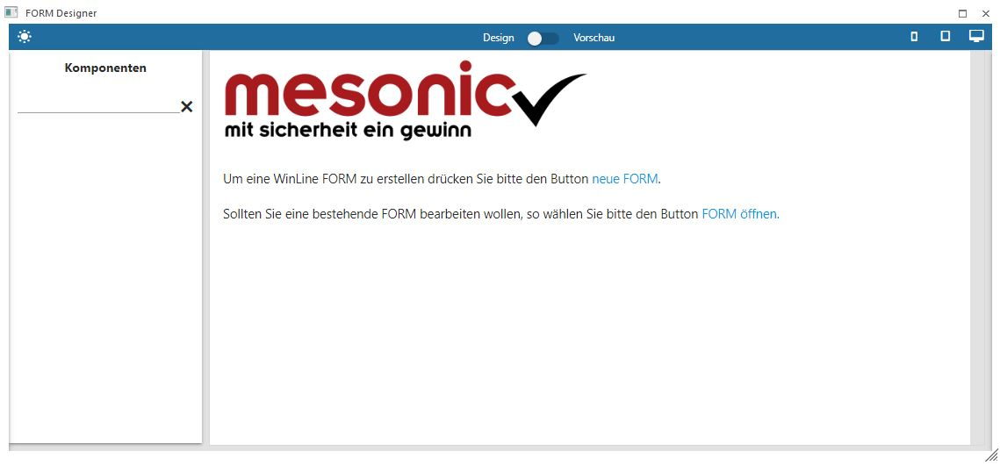
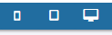
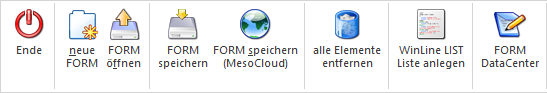
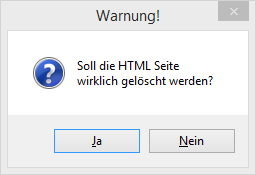

Der FORM Designer wird über den Menüpunkt…
1 WinLine INFO
1 SMART
1 FORM
1 Designer
… aufgerufen und bietet die Möglichkeit, neue FORMs zu erstellen bzw. bestehende FORMs zu bearbeitet / ergänzen.
Beim Start des FORM Designer kann im Startbildschirm über den Button "neue FORM", sowie den Button "FORM öffnen" oder den Link im Eröffnungstext begonnen werden.

ü Neue FORM
Wenn der Button "neue
FORM" ausgelöst wird, dann kann ein neues Formular oder eine Multi FORM
angelegt.
ü "FORM Öffnen"
Dieser Button
öffnet ein bereits bestehendes FORM, eine Multi FORM, ein individuelle Formulare
oder eine CRM Ansicht zur Weiterbearbeitung oder Ansicht.
Wenn ein FORM zur Bearbeitung geöffnet ist (unabhängig davon, ob es sich um ein neues FORM handelt, oder ob ein bestehendes FORM bearbeitet ist) gibt es allgemeine Programmfunktionen:
Allgemeines Design
Die Funktion der Icons "Sonne"" und "Mond" befinden sich oben links im FORM Designer Fenster.
Ø
Wurde die Sonne ausgewählt, so ist das helle Design das Bearbeitungsdesign.
Ø
Im dunklen Design stellt sich der FORM Designer dar, wenn das Symbol "Mond" gewählt wurde.
Design / Vorschau
Im oberen Bereich des FORM Designers kann zwischen dem Modus "Design" und "Vorschau" gewechselt werden.
Mit dieser Funktion kann jederzeit das Ergebnis des gestalteten FORMs (auch im Zusammenhang mit den unterschiedlichen Devices) betrachtet werden.
Erstellung des FORM für unterschiedliche Devices
Der grafische Aufbau einer responsiven Seite erfolgt anhand der Anforderungen des jeweiligen Gerätes, mit dem die Seite betrachtet wird. Dies betreffen insbesondere die Anordnung und Darstellung der einzelnen Elemente. Über die Buttons…

Handy Tablet PC
… kann auf eine Ansicht des jeweiliges Devices umgeschaltet werden, um die Darstellung des FORM zu prüfen oder auch zu gestalten.
FORM Einstellungen
Die FORM Einstellungen, die über den Button ausgewählt werden können, stehen nur bei selbst erstellten FORMS zur Verfügung. Details dazu stehen im Kapitel FORM Einstellungen beschrieben.
Bearbeitung
Wenn ein Formular zur Bearbeitung geöffnet ist, ist das Fenster in bis zu drei Bereiche aufgeteilt:
ü Komponenten
Auf der rechten
Seite werden die Komponenten angezeigt, die im Formular zu Verfügung stehen.
Welche das sind, hängt vom jeweiligen Typ des Formulars ab. Details dazu können
im Kapitel Unterschiedliche
Komponenten nachgelesen werden.
ü Gestaltung / Felder
In der
Mitte findet die Gestaltung des FORM statt. Aus dem rechten Bereich können die
Komponenten via Drag&Drop in die Mitte an die gewünschte Stelle gezogen
werden.
ü Einstellungen
Wenn eine
Komponente an die gewünschte Stelle gezogen wurde, können meist noch indiv.
Einstellungen vorgenommen werden. Die genauen Einstellungen können im Kapitel
FORM Felder (Formular) nachgelesen werden.
Buttons

Ø Ende
Das Fenster wird ohne zu speichern geschlossen
Ø neue FORM
Mit diesem Button kann eine neues FORM angelegt werden.
Ø FORM öffnen
Mit diesem Button kann ein bestehendes FORM geöffnet werden.
Ø FORM speichern
Durch Anklicken des Buttons oder durch Drücken der F5-Teste wird die FORM Vorlage gespeichert.
Ø FORM speichern (MesoCloud)
Durch Anklicken des Buttons wird die Vorlage in der MesoCloud gespeichert.
Ø alle Elemente entfernen
Mit diesem Button werden alle Elemente aus der Vorlage entfernt, wobei vorher noch eine Sicherheitsabfrage erfolgt:

Ø WinLine LIST Liste anlegen
Wenn dieser Button angeklickt wird, wird automatisch aufgrund des aktiven FORMs eine Liste im WinLine Listgenerator erzeugt, wobei die Liste im Bereich der Datenquellen angesiedelt wird. Es werden alle Felder des FORM in die Listdefinition übernommen. Nach der Erstellung wird eine entsprechende Meldung ausgegeben.
Ø FORM DataCenter
Durch Anklicken dieses Buttons gelangt man in das FORM DataCenter, wo das erstellt FORM dann entsprechend "ausgefüllt" werden kann.